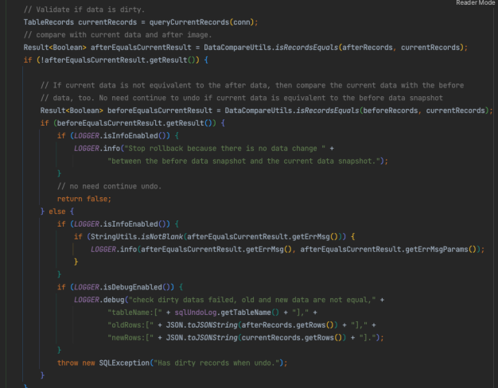

理论基础
我们拿转账作为例子，A需要转100元给B，那么需要给A的余额-100元，给B的余额+100元，整个转账要保证，A-100和B+100同时成功，或者同时失败。看看在各种场景下，是如何解决这个问题的。
本地事务：把多条语句作为一个整体进行操作的功能，被称为数据库事务。数据库事务可以确保该事务范围内的所有操作都可以全部成功或者全部失败
分布式事务：涉及两个银行的数据，无法通过一个数据库的本地事务保证转账的ACID，只能够通过分布式事务来解决。
分布式事务就是指事务的发起者、资源及资源管理器和事务协调者分别位于分布式系统的不同节点之上。在上述转账的业务中，用户A-100操作和用户B+100操作不是位于同一个节点上。本质上来说，分布式事务就是为了保证在分布式场景下，数据操作的正确执行。
分布式事务可以分为两类：
- 第一类为：NewSQL的内部分布式事务
- 第二类为：跨数据库、跨服务的分布式事务
跨数据库、跨服务的分布式事务
这类分布式事务只是部分遵循 ACID 规范的：
- 原子性：严格遵循
- 一致性：事务完成后的一致性严格遵循；事务中的一致性可适当放宽
- 隔离性：并行事务间不可影响；事务中间结果可见性允许安全放宽
- 持久性：严格遵循
事务具有 4 个属性：原子性、一致性、隔离性、持久性。这四个属性通常称为 ACID 特性。
- Atomicity（原子性）：一个事务中的所有操作，要么全部完成，要么全部不完成，不会结束在中间某个环节。事务在执行过程中发生错误，会被恢复到事务开始前的状态，就像这个事务从来没有执行过一样。
- Consistency（一致性）：在事务开始之前和事务结束以后，数据库的完整性没有被破坏。完整性包括外键约束、应用定义的等约束不会被破坏。
- Isolation（隔离性）：数据库允许多个并发事务同时对其数据进行读写和修改的能力，隔离性可以防止多个事务并发执行时由于交叉执行而导致数据的不一致。
- Durability（持久性）：事务处理结束后，对数据的修改就是永久的，即便系统故障也不会丢失。
对于这里面的C（一致性），我们以一个非常具体的业务例子，来进行解释。假如我们正在处理一个转账业务，假设是A转给B 30元，在本地事务的支持下，我们的用户看到A+B的总金额，在整个转账前后，以及转账过程中，都是保持不变的。那么这个时候用户认为他看到的数据是一致的，符合业务约束的。
在单机本地事务中，A+B的总金额在任何时刻去查（以常见的ReadCommitted或ReadRepeatable隔离级别），都是不变的，也就是业务约束一直都保持的这种一致性，我们称之为强一致性。
无法强一致

两个commit中间进行的查询，那么我们查到的结果数据，将是A+B+30，不等于A+B。从理论上分析，由于是分布式系统，那么一定是无法保证两个commit同时结束，只要两个commit中间有时间差，那么无论如何我们都无法保证强一致性。
最终一致性
分布式事务方案称为最终一致性方案，因为在分布式事务进行的过程中，一致性是无法得到保证的，但是分布式事务完成之后，一致性是没问题的
BASE是Basically Available（基本可用）、Soft state（软状态）和Eventually consistent（最终一致性）三个短语的简写，BASE是对CAP中一致性和可用性权衡的结果，其来源于对大规模互联网系统分布式实践的结论，是基于CAP定理逐步演化而来的，其核心思想是即使无法做到强一致性（Strong consistency），但每个应用都可以根据自身的业务特点，采用适当的方式来使系统达到最终一致性（Eventual consistency）
常见模式
tcc事务模式
- Try 阶段：尝试执行，完成所有业务检查（一致性）, 预留必须业务资源（准隔离性）
- Confirm 阶段：如果所有分支的Try都成功了，则走到Confirm阶段。Confirm真正执行业务，不作任何业务检查，只使用 Try 阶段预留的业务资源
- Cancel 阶段：如果所有分支的Try有一个失败了，则走到Cancel阶段。Cancel释放 Try 阶段预留的业务资源。
- 优点：适合一致性要求较高、需要较多灵活性（三阶段灵活编排）的短事务（应用端事务编排）
- 缺点：需要自行实现三个阶段的逻辑
saga模式
- 将长事务拆分为多个短事务，由Saga事务协调器协调，如果每个短事务都成功提交完成，那么全局事务就正常完成，如果某个步骤失败，则根据相反顺序一次调用补偿操作。
- 优点：适合业务流程长、业务流程多、参与者包含其它公司或遗留系统服务（应用端事务编排），无法提供 TCC 模式要求的三个接口。简单易用，工作量少，并且能够解决绝大部分业务的需求
- 缺点：需要自行实现补偿逻辑
xa事务模式
- 第一阶段（prepare）：即所有的参与者RM准备执行事务并锁住需要的资源。参与者ready时，向TM报告已准备就绪。
- 第二阶段 (commit/rollback)：当事务管理者™确认所有参与者(RM)都ready后，向所有参与者发送commit命令
- 优点：全局一致性、业务无侵入、数据库的支持广泛、多语言支持容易
- 缺点：对资源进行了长时间的锁定，并发度低，不适合高并发的业务

Seata AT
- 一阶段：业务数据和回滚日志记录在同一个本地事务中提交，释放本地锁和连接资源。
- 二阶段：提交异步化，非常快速地完成。回滚通过一阶段的回滚日志进行反向补偿。
AT 的第一阶段为prepare，它在这一阶段会完成以下事情：
- RM 侧，用户开启本地事务
- RM 侧，用户每进行一次业务数据修改，假设是一个update语句，那么 AT 会做以下内容：
- 根据update的条件，查询出修改前的数据，该数据称为BeforeImage
- 执行update语句，根据BeforeImage中的主键，查询出修改后的数据，该数据称为AfterImage
- 将BeforeImage和AfterImage保存到一张undolog表
- 将BeforeImage中的主键以及表名，该数据称为lockKey，记录下来，留待后续使用
- RM 侧，用户提交本地事务时，AT 会做以下内容：
- 将2.4中记录的所有的lockKey，注册到 TC（即事务管理器seata）上
- 3.1中的注册处理会检查 TC 中，是否已存在冲突的主键+表名，如果有冲突，那么AT会睡眠等待后重试，没有冲突则保存
- 3.1成功完成后，提交本地事务
如果 AT 的第一阶段所有分支都没有错误，那么会进行第二阶段的commit，AT 会做以下内容：
- TC 会将当前这个全局事务所有相关的lockKey删除
- TC 通知与当前这个全局事务相关的所有业务服务，告知全局事务已成功，可以删除undolog中保存的数据
- RM 收到通知后，删除undolog中的数据
如果 AT 的第一阶段有分支出错，那么会进行第二阶段的rollback，AT 会做以下内容：
- TC 通知与当前这个全局事务相关的所有业务服务，告知全局事务失败，执行回滚
- RM 收到通知后，对本地数据的修改进行回滚，回滚原理如下：
- 从undolog中取出修改前后的BeforeImage和AfterImage
- 如果AfterImage与数据库中的当前记录校验一致，那么使用BeforeImage中的数据覆盖当前记录
- 如果AfterImage与数据库中的当前记录不一致，那么这个时候发生了 脏回滚 ，此时需要人工介入解决
- TC 待全局事务所有的分支，都完成了回滚，TC 将此全局事务所有的lockKey删除
写隔离：
-
一阶段本地事务提交前，需要确保先拿到 全局锁 。
-
拿不到 全局锁 ，不能提交本地事务。
-
拿 全局锁 的尝试被限制在一定范围内，超出范围将放弃，并回滚本地事务，释放本地锁。
-
在数据库本地事务隔离级别 读已提交（Read Committed） 或以上的基础上，Seata（AT 模式）的默认全局隔离级别是 读未提交（Read Uncommitted） 。

XA VS AT
脏回滚：
AT 模式的一个突出问题是rollback中2.3的脏回滚难以避免。以下步骤能够触发该脏回滚：
-
全局事务g1对数据行A1进行修改 v1 -> v2
-
另一个服务将对数据行A1进行修改 v2 -> v3
-
全局事务g1回滚，发现数据行A1的当前数据为v3，不等于AfterImage中的v2，回滚失败
这个脏回滚一旦发生，那么分布式事务框架没有办法保证数据的一致性了，必须要人工介入处理。想要避免脏回滚，需要把所有对这个表的写访问，都加上特殊处理（在Seata的Java客户端中，需要加上GlobalLock注解）。这种约束对于一个上了一定规模的复杂系统，是非常难以保证的。
XA 在数据库系统层面实现了行锁，原理与普通事务相同，因此一旦出现两个事务访问同一行数据，那么后一个事务会阻塞，完全不会有脏回滚的问题
SQL支持度：
AT 模式并未支持所有的SQL，它的原理是在应用层解析SQL，然后根据不同的SQL生成BeforeImage和AfterImage，一方面不同的SQL可能需要采用不同的逻辑来生成这些Image，另一方面不同的数据库语法不同，因此不常见的SQL，AT可能不支持。
XA 是数据库层面支持的，因此对所有的DML SQL都支持，不会出现问题
替代：DTM
非java语言分布式事务的首选方案
XA DEMO：
https://dtm.pub/practice/xa.html#xa是什么
1 | Go |
- 注册了一个全局XA事务，添加了两个子事务TransOut、TransIn
- 子事务全部执行成功之后，提交给dtm
- dtm收到提交的xa全局事务后，会调用所有子事务的xa commit
 |
 |
|---|
附：发现的Seata的Bug与解决
问题一、搬运任务数据无法回滚问题分析
问题复现
并发创建搬运任务报错Has dirty records when undo，部分数据无法回滚
本地代码部分修改、模拟报错，连接dev环境复现并发创建搬运任务，成功复现
问题定位
第一次请求过程中，发送第二次请求，第二次请求先于第一次请求结束，且modify_time被修改，导致第一次请求seata记录的beforeImage（空）和afterImage（时间为31）与currentImage均无法对应上，第一次请求则无法回滚，抛出报错：Has dirty records when undo
源码分析结论为：如果当前数据与后置镜像数据不同，且与前置镜像也不同，则报错存在脏记录无法回滚

脏记录产生原因：传递xid失败（没加globletransactional注解、多线程并发调用没传xid给子线程、seata并发bug）
第二次请求在执行更新modify_time前获取全局锁时报错：get global lock fail, xid:，但报错后仍然更新成功且继续执行后续sql语句，怀疑是seata并发bug
如果只按seata官方提供的AT模式流程分析，modify_time是不应该被修改的，但实际被修改，与官方描述不一致，需要分析源码继续定位
复现步骤一、第一次请求，获取全局锁成功，执行insert操作，提交一阶段事务（一阶段：业务数据和回滚日志记录在同一个本地事务中提交，释放本地锁和连接资源。）
第二次调用，获取全局锁失败，检测到全局锁被锁定（通过lockKeys校验已经与第一次调用时传的lockKeys重复），报错 io.seata.rm.datasource.exec.LockConflictException: get global lock fail
以上是执行updateById前的报错，然后updateById竟然还能往下走，并且成功修改modify_time
第一次执行失败，报错，重试机制兜底，第二次执行没有携带xid，导致直接提交，因为rollback逻辑中reset方法清空了xid：

解决方案
升级版本，在test环境的seata客户端版本升级到1.4.2之后，发现新问题：【库存数据无法回滚问题】

- [#3451] 修复autoCommit=true，全局锁竞争失败时的脏写问题https://github.com/seata/seata/pull/3451/files
问题二、库存数据无法回滚问题分析（一）
问题复现
test环境测试之后发现库存还是存在脏写问题，需要再次尝试定位问题。测试环境继续复现
问题定位
锁定库存的AfterImage VS 当前数据
看起来是seata对比逻辑不对，因为库存是一条一条占用的，AfterImage记录完成之后，肯定还有后续的更新语句，去修改lock_quantity，最终数据肯定与AfterImage不一致，导致回滚的时候顺序错乱。
实际上seata服务端是按branch_table时间戳倒序进行回滚，如果表的时间字段精度不够，则可能一秒中的多个log顺序错乱
解决方案
branch_table、undo_log表：gmt_create, gmt_modified字段精度设置到6
官方文档：https://github.com/seata/seata/blob/1.4.1/script/server/db/mysql.sql

问题三、库存数据无法回滚问题分析（二）
问题复现
再次碰到问题：https://github.com/seata/seata/pull/5310
在1.6.1基础上加上该修复代码，打包上传到nexus中，再次打包，还是相同的报错

修改配置解决：

1.7 版本仍未修复sql不对关键字转义的bug · Issue #5752 · seata/seata